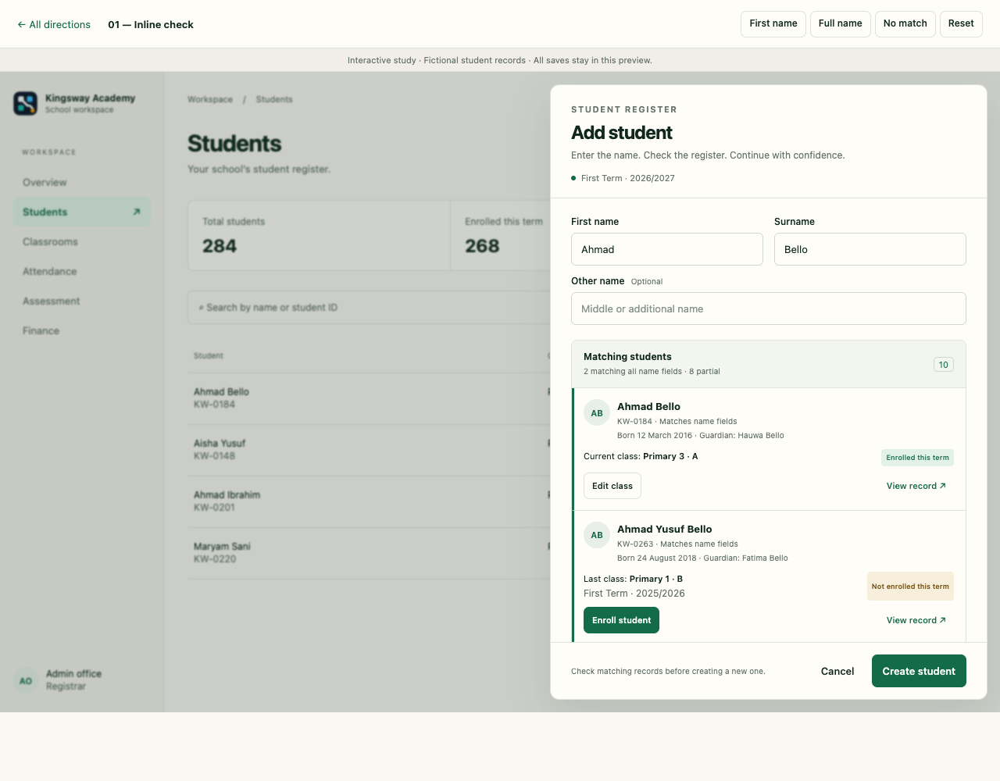
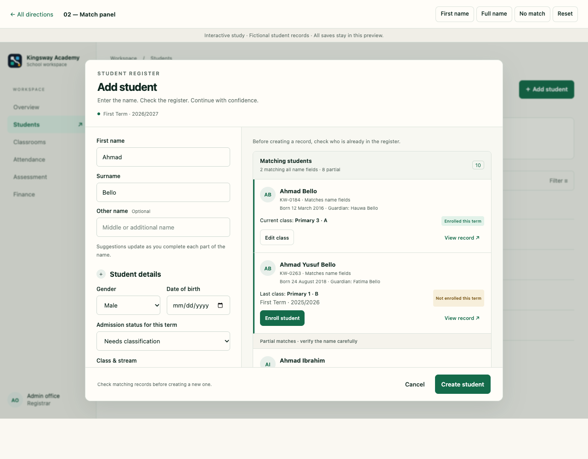
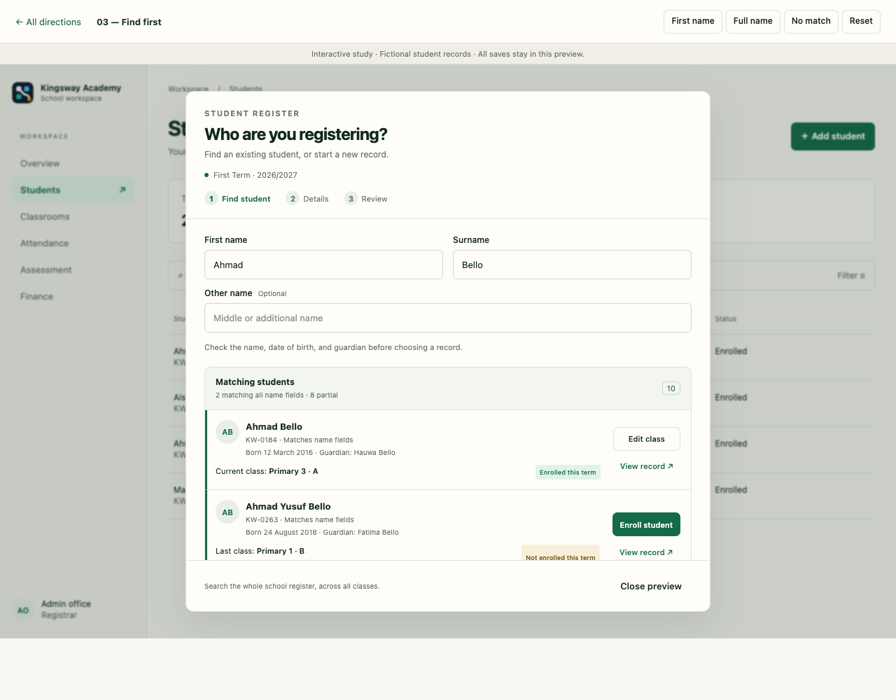

01 / Familiar
Inline check
Keep the current sheet. Suggestions sit directly beneath the name fields, with current class and an Edit class action on each enrolled record. Familiar, but adds form height.
 School Clerk / Design workshop11 October 2026 · 3 directions
School Clerk / Design workshop11 October 2026 · 3 directionsA name should help you find an existing record, even when the student is already enrolled. Explore three ways to bring full-name suggestions, current class, and a class correction into the student form.

Keep the current sheet. Suggestions sit directly beneath the name fields, with current class and an Edit class action on each enrolled record. Familiar, but adds form height.

Write on the left, compare on the right. Matches have room for class, date of birth, and guardian details. Easier to verify identity, but needs more desktop space.

Start by finding the person, then enroll, edit their class, or create a new record. A clearer decision before registration, with an extra step for new students.
Use fictional records to try the interaction.
All directions use the same sample school, term, students, and School Clerk theme. “Save” changes fictional records in the current preview only. Reset restores the original draft and records. No real student, enrollment, payment, or class changes are made.